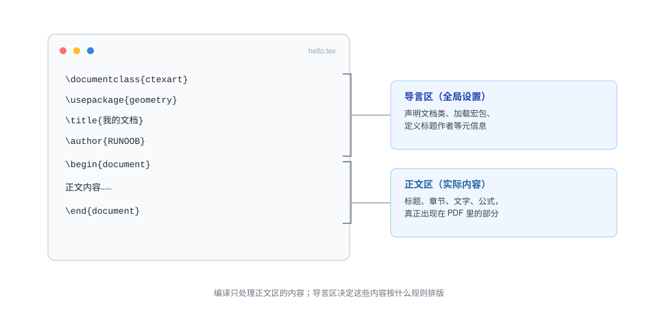

LaTeX のインストールと設定
LaTeX は TeX をベースにした組版システムであり、使用する前に TeX ディストリビューションとエディターをインストールする必要があります。
この章では、Windows、macOS、Linux システムに対応した LaTeX のインストールと設定について説明します。
LaTeX のインストール
Windows システム
Windows システムでは、次のツールの使用をお勧めします。MiKTeX 或 TeX LiveLaTeX をインストールするために。
MiKTeX のインストール
- MiKTeX のダウンロード：アクセスMiKTeX 公式サイトにアクセスして、お使いのシステムに適したインストーラーをダウンロードします。
- インストーラーの実行：ダウンロードしたインストーラーをダブルクリックし、指示に従ってインストールします。「完全インストール」を選択して、一般的なマクロパッケージがすべてインストールされるようにすることをお勧めします。
- 環境変数の設定：インストール後、MiKTeX の
binディレクトリがシステムの PATH 環境変数に追加されていることを確認します。これにより、コマンドラインで LaTeX コマンドを直接使用できます。
TeX Live のインストール
- TeX Live のダウンロード：アクセスTeX Live 公式サイトにアクセスして、お使いのシステムに適したインストーラーをダウンロードします。
- インストーラーの実行：ダウンロードしたインストーラーをダブルクリックし、指示に従ってインストールします。TeX Live のインストールには多くのマクロパッケージとツールが含まれているため、時間がかかります。
- 環境変数の設定：インストール後、TeX Live の
binディレクトリがシステムの PATH 環境変数に追加されていることを確認します。
macOS システム
macOS システムでは、次のツールの使用をお勧めします。MacTeXLaTeX をインストールするために。
MacTeX のインストール
- MacTeX のダウンロード：アクセスMacTeX 公式サイトにアクセスして、お使いのシステムに適したインストーラーをダウンロードします。
- インストーラーの実行：ダウンロードした
.pkgファイルをダブルクリックし、指示に従ってインストールします。MacTeX には TeX Live と関連する GUI ツールが含まれています。 - 環境変数の設定：インストール後、TeX Live の
binディレクトリがシステムの PATH 環境変数に追加されていることを確認します。
Linux システム
Linux システムでは、次のツールの使用をお勧めします。TeX LiveLaTeX をインストールするために。
TeX Live のインストール
- パッケージマネージャーを使用したインストール：ほとんどの Linux ディストリビューションは TeX Live のパッケージを提供しています。パッケージマネージャーを使用してインストールできます。例えば、Ubuntu では次のコマンドを使用できます：
sudo apt-get install texlive-full
これにより、一般的なマクロパッケージとツールをすべて含む完全な TeX Live ディストリビューションがインストールされます。 - 手動インストール：最新版の TeX Live が必要な場合は、TeX Live 公式サイトからインストールスクリプトをダウンロードして手動でインストールします。
LaTeX の設定
エディターの選択
LaTeX 文書はプレーンテキストファイルなので、任意のテキストエディターで LaTeX コードを記述できます。ただし、専用の LaTeX エディターを使用すると効率が向上します。以下はよく使われる LaTeX エディターです：
- TeXstudio：クロスプラットフォームの LaTeX エディターで、高機能であり、初心者から上級者まで適しています。
- Overleaf：オンラインの LaTeX エディターで、インストール不要、コラボレーションやクイック編集に適しています。
- VS Code：汎用コードエディターで、LaTeX プラグイン（LaTeX Workshop など）をインストールすることで LaTeX の編集とコンパイルをサポートできます。
LaTeX 文書のコンパイル
LaTeX 文書はコンパイルによって最終的な PDF ファイルを生成する必要があります。よく使われるコンパイルコマンドには次のものがあります：
pdflatex：PDF ファイルを生成し、ほとんどの文書に適しています。xelatex：Unicode と TrueType フォントをサポートし、中国語文書の処理に適しています。lualatex：Lua ベースのコンパイルエンジンで、モダンなフォントと高度な機能をサポートしています。
コンパイルコマンドの使用方法は次のとおりです：
pdflatex mydocument.tex
これにより、mydocument.pdfファイルが生成されます。
中国語文書の処理
中国語文書を処理する必要がある場合は、次の組み合わせをお勧めします。xelatex 或 lualatexコンパイルエンジンと、ctexマクロパッケージです。以下は簡単な LaTeX 中国語文書の例です：
例
\begin{document}
こんにちは、世界！
\end{document}
を使用してxelatexこの文書をコンパイルします：
xelatex mydocument.tex
マクロパッケージのインストールと管理
LaTeX のマクロパッケージは、パッケージマネージャーによってインストールおよび管理できます。MiKTeX と TeX Live では、次のコマンドを使用してマクロパッケージをインストールできます：
- MiKTeX：使用
MiKTeX Consoleマクロパッケージを検索してインストールします。 - TeX Live：使用
tlmgrコマンドを使用してマクロパッケージをインストールします。例：tlmgr install <package-name>
コンパイルの流れ
LaTeX の核心的なワークフローは次のとおりです：
你编写的 .tex 源文件 → 编译器（如 pdfLaTeX） → 生成 .pdf 文件
コンパイル中に補助ファイル（.aux、.log、.toc など）も生成されます。これらは目次や参照などの情報を記録するために使用され、通常は手動で管理する必要はありません。
よく使われるコンパイルコマンドには次のものがあります：
- pdflatex：最も一般的で、直接 PDF を生成しますが、中国語とフォントのサポートは弱めです
- xelatex：システムフォントと中国語をサポートしており、中国語ユーザーにお勧めです
- lualatex：より高機能な次世代エンジンで、速度はやや遅いです
最初の "Hello World" 文書
新しい .tex ファイルを作成し、次の内容を入力します：
\documentclass{article}
\begin{document}
Hello, World! 这是我的第一份 LaTeX 文档。
\end{document}
保存してコンパイルをクリックすると、この文を含む PDF 文書が得られます。
文書の基本構造の解析
LaTeX 文書は通常、2つの部分に分けられます：
\documentclass{article} % 前导区（Preamble）：设置文档类型、加载宏包
\begin{document} % 正文区：实际显示的内容
正文内容写在这里
\end{document} - プリアンブル：\documentclass と \begin{document} の間に位置し、文書クラスの宣言、マクロパッケージの導入、グローバル設定の定義に使用されます。この部分の内容は最終的な PDF には表示されません
- 本文領域：\begin{document} から \end{document} までの内容が、実際に組版出力される部分です
よく使う文書クラス（Document Class）
\documentclass{article} % 文章、短报告，无章节 chapter
\documentclass{report} % 长报告，支持 chapter
\documentclass{book} % 书籍，支持双面排版、chapter
\documentclass{letter} % 信件
\documentclass{beamer} % 演示文稿（幻灯片）
角括弧でオプションを渡すことができます。例：
\documentclass[12pt, a4paper]{article}これは 12pt のフォントサイズ、A4 用紙で組版することを意味します。
文書の基本構造
すべての LaTeX 文書は、プリアンブルと本文領域の2つの部分で構成されます。

\begin{document} の前はプリアンブルであり、文書クラスの宣言、マクロパッケージの読み込み、タイトルや著者などのグローバル設定を定義するために使用されます。
\begin{document} と \end{document} の間は本文領域であり、タイトル、章、テキスト、数式はすべてここに書きます。
文書クラスは文書の全体的な形式を決定し、最初の行の \documentclass で宣言します。
| 文書クラス | 用途 | 典型的な用途 |
|---|---|---|
| article | 短文と論文、「章」レベルなし | 学術雑誌の論文、課題、小レポート |
| report | 「章」レベルのある長いレポート | 実験レポート、課程設計 |
| book | 書籍、前言、章、付録を含む | 教科書、専門書 |
| ctexart / ctexrep / ctexbook | 上記3つの中国語版 | 中国語文書なら、これを選びましょう |
| beamer | スライド | 学術プレゼンテーション、第12回で詳しく説明 |
文書クラスには角括弧のオプションを付けることもできます。例えば、フォントサイズや用紙を指定できます：
例：オプション付きの文書クラス
% a4paper：A4 用紙（デフォルトはレターサイズ、国内での印刷では明示的な宣言を推奨）
\documentclass[12pt, a4paper]{ctexart}
最初の完全な文書
Hello World は簡単すぎて、LaTeX の価値がわかりません。以下のドキュメントにはタイトル領域、リスト、数式が追加されており、より日常的な使用に近いものになっています。
例：最初の完全な文書
\usepackage{geometry} % ページ設定マクロパッケージを読み込む（\geometry を使用する前に必須）
\geometry{a4paper, margin=2.5cm} % A4 用紙、四辺の余白 2.5 センチ
\title{私の最初の完全なドキュメント} % タイトル
\author{RUNOOB} % 著者
\date{\today} % \today でコンパイル当日の日付を自動入力
\begin{document}
\maketitle % タイトル領域を生成（タイトル、著者、日付を中央に表示）
こんにちは、\LaTeX{}！このドキュメントは XeLaTeX でコンパイルされました。
私は LaTeX を使って3つのことをするのが好きです：
\begin{itemize} % 番号なしリスト環境
\item数式を書くこと（例：三平方の定理）$a^2 + b^2 = c^2$；
\item章番号と目次を自動生成すること；
\item長いドキュメントの書式を統一すること。
\end{itemize}
\end{document}
コンパイル後の結果：

いくつかの詳細に注意してください：\maketitle はプリアンブルで定義されたタイトル情報をタイトル領域として描画します；\today は「2026年8月20日」を自動生成するため、手書きは不要です；itemize リストには自動的に黒丸が付きます。
これらのコマンドの具体的なルールは、今後の記事で一つずつ説明します。
よくある問題のトラブルシューティング
初めて環境を構築するとき、問題に遭遇するのはよくあることです。以下に、初心者が最も頻繁に遭遇するエラーをまとめました。
| 現象 | 原因 | 解決方法 |
|---|---|---|
| 中国語が空白で表示される、または直接エラーになる | コンパイラが XeLaTeX ではない | Overleaf では Menu で切り替え；ローカルでは xelatex コマンドでコンパイル |
| Undefined control sequence | コマンドのスペルミス、または読み込まれていないマクロパッケージのコマンドを使用 | ログを見て行番号を特定し、スペルを確認；対応するマクロパッケージが \usepackage されているか確認 |
| File 'xxx.sty' not found | ローカルディストリビューションにそのマクロパッケージがない | TeX Live は tlmgr install xxx でインストール；MiKTeX は通常自動的にダウンロードされる |
| 目次、参照が ?? と表示される | 1回しかコンパイルしていない | もう一度コンパイルする |
| Overleaf のコンパイルがタイムアウト | 無料版にはリソース制限がある | ドキュメントを簡素化するか、ローカルコンパイルに切り替える |
クリックしてノートを共有
ノートはこの記事の内容を拡張したものである必要があります！
記事の投稿は、こちらをクリック
登録招待コードの取得方法
ノートを共有する前にはログインが必要です！
登録招待コードの取得方法